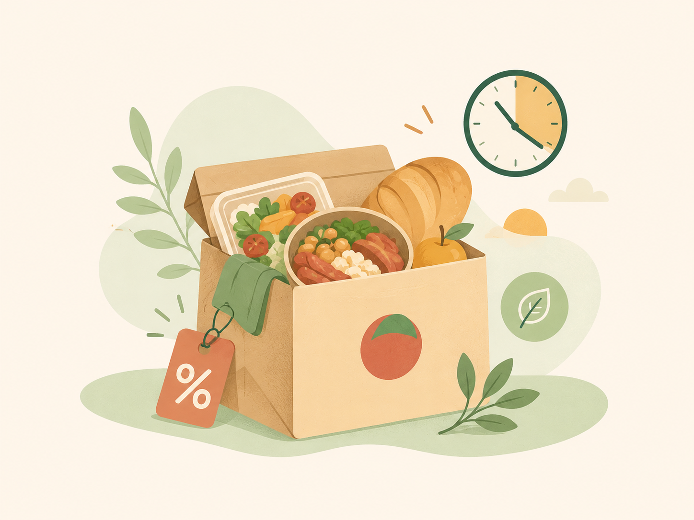

1. Elige
Busca un local cercano con excedentes del día.
Rescatamos comida en perfecto estado que los negocios necesitan vender antes del cierre del día.
Revisa el menú, identifica ofertas con urgencia y haz tu pedido. Así unes el ahorro para tu bolsillo con una acción responsable contra el desperdicio de alimentos en tu ciudad.

Busca un local cercano con excedentes del día.
Compra tu pack sorpresa a un precio muy bajo.
Recógelo en el horario indicado y disfruta.
Platos rescatados
Ahorro de usuarios
CO2 evitado al planeta
¡Para nada! Es comida fresca del día que los locales no lograron vender. Al rescatarla, comes rico, pagas menos y ayudas al planeta.
Al hacer tu reserva en la página, te indicaremos el horario de recojo. Suele ser entre 30 a 60 minutos antes de que el local cierre.
Por ahora, el modelo de Último Bocado es solo para recojo en tienda. Esto nos ayuda a mantener los precios súper bajos para ti.